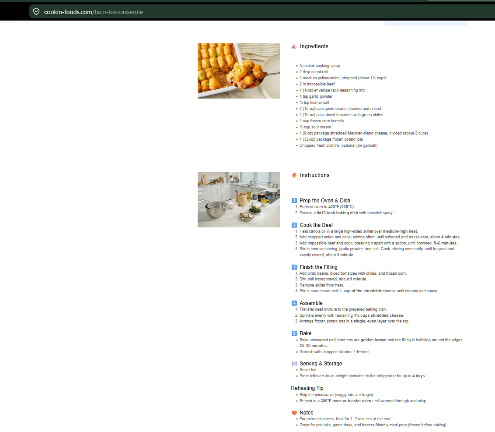

Taco Tot Casserole
Taco-inspired tater tot casserole with beans, impossible beef, tomatoes, cheese, and corn.
Ingredients
Casserole
- Nonstick cooking spray
- 2 tbsp canola oil
- 1 medium yellow onion, chopped
- 2 lb Impossible beef
- 1 packet taco seasoning
- 1 tsp garlic powder
- ½ tsp kosher salt
- 2 cans pinto beans, drained and rinsed
- 2 cans diced tomatoes with green chiles
- 1 cup frozen corn
- ½ cup sour cream
- 1 package Mexican-blend cheese, divided
- 1 package frozen potato tots
- Cilantro, optional
Instructions
Prep oven and dish
Preheat oven to 425°F and grease a 9×13-inch baking dish with nonstick spray.
Cook beef
Heat canola oil in a large high-sided skillet over medium-high heat. Add onion and cook about 4 minutes until softened and translucent. Add impossible beef and cook, breaking it apart, 5–6 minutes until browned.
Season
Stir in taco seasoning, garlic powder, and salt. Cook about 1 minute until fragrant and evenly coated.
Finish filling
Add pinto beans, diced tomatoes with chiles, and frozen corn. Stir until incorporated, about 1 minute. Remove from heat and stir in sour cream and ½ cup shredded cheese until creamy and saucy.
Assemble
Transfer beef mixture to the prepared baking dish. Sprinkle evenly with remaining shredded cheese. Arrange frozen potato tots in a single even layer over the top.
Bake
Bake uncovered 25–30 minutes, until tots are golden brown and filling bubbles around the edges. Garnish with cilantro if desired.
Notes
- Serve hot and store leftovers airtight in the refrigerator up to 4 days.
- Skip the microwave when reheating; use a 350°F oven or toaster oven until warmed through and crisp.
- For extra crispiness, broil 1–2 minutes at the end.